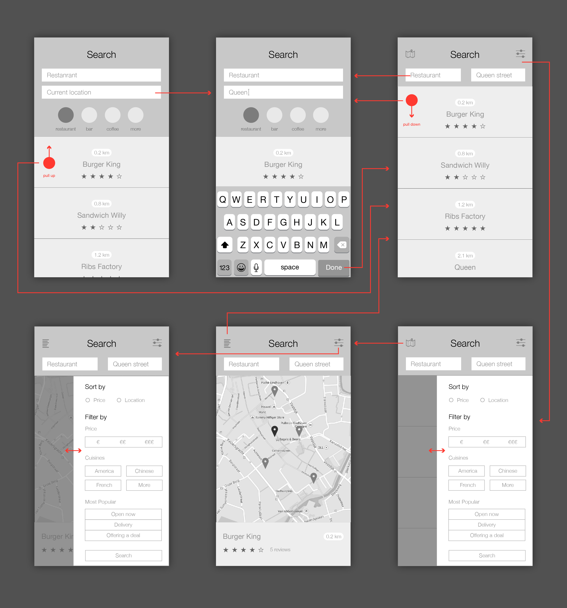

Mobile Search Flow
Design Process
The design task I picked is to redesign the mobile search flow in yelp. The goal for me is to design an easy to use search section for yelp users. I started this design exercise with a user scenario to empathize the experience of the current search flow in yelp. By analyzing the infostructure of search section, I found three aspects which could be redesigned to improve the user experience.
Wireframe
With the infostructure, wireframe was used to explore and frame ideas.
Low-fidelity
Final Design
Aligned with yelp's brand visual identity, the color set I chose for the final design tends to give a passionate and vibrant impression, which could be attractive to users.